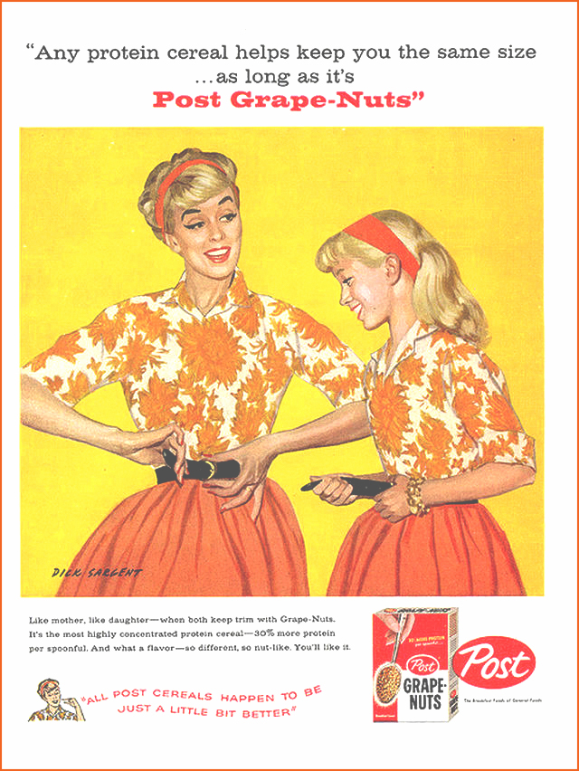

Body Shaming
Naturally Mass Media sets specific standards
through popular imagery (Advertising, magazines..)
and therefore creates insecurities within society
through popular imagery (Advertising, magazines..)
and therefore creates insecurities within society
It started with the Victorian era. Society was even back then, fixated on beauty, little waits, big butts..
Until the 1970’s Advertisers were not only diminishing women’s role in society in order to sell their product but
used ‘body shaming” as one of their tactics.
For example the on the right side of the page is calling out “girls with too much bottom and too little top”. The intention behind the ad is to let the consumer know that Warners can “take your misshapen body and remold it into something socially acceptable” Grape nuts cereal also commissioned a series of problematic and sexist in the 1950’s.
In order to sell the product and services they made a clear statement that fat means bad.
On the right side the poster we can see a thin, smiling women holding a floral dress.
On the left side a bigger women is portrayed however she seems unhappy and jealous.
The idea behind this specific use of imagery is to tell the potential the consumer that in order to be happy you need
to be skinny and therefore eat some post grape nut.
For example the on the right side of the page is calling out “girls with too much bottom and too little top”. The intention behind the ad is to let the consumer know that Warners can “take your misshapen body and remold it into something socially acceptable” Grape nuts cereal also commissioned a series of problematic and sexist in the 1950’s.
In order to sell the product and services they made a clear statement that fat means bad.
